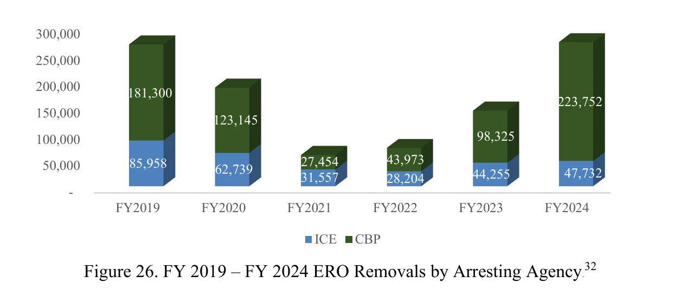
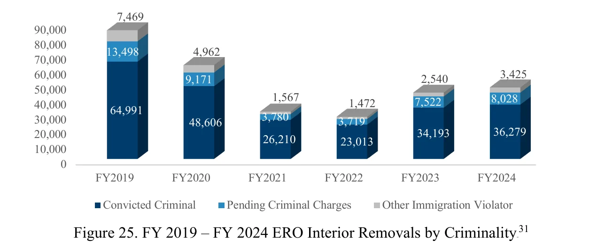
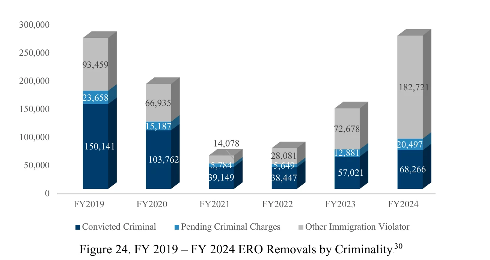
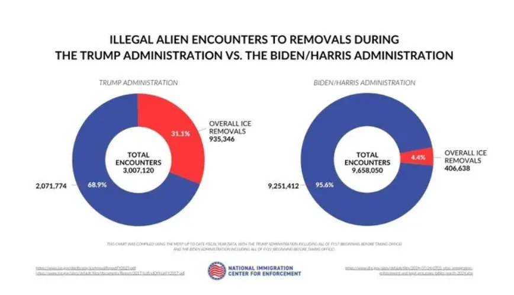

ICE ERO removals by fiscal year, FY2019-FY2024. U.S. Immigration and Customs Enforcement (ICE), FY2024 Annual Report, Figure 23 | Date: Dec 2024. All removals carried out by ICE ERO, including people first arrested by CBP at the border. ICE counts removals and some returns; FY2024 = 271,484. Not the same as DHS-wide removals Source: https://www.ice.gov/doclib/eoy/iceAnnualReportFY2024.pdf

ICE ERO removals by arresting agency (ICE interior vs CBP border), FY2019-FY2024. ICE FY2024 Annual Report, Figure 26 | Date: Dec 2024. Who arrested the people ICE removed. ICE-arrested (interior) FY2024 = 47,732 vs CBP-arrested (border) = 223,752. The key chart for the interior-vs-border question Source: https://www.ice.gov/doclib/eoy/iceAnnualReportFY2024.pdf

ICE ERO interior removals by criminality, FY2019-FY2024. ICE FY2024 Annual Report, Figure 25 | Date: Dec 2024. Interior removals split into convicted, pending charges and other immigration violators. Interior = arrested by ICE away from the border Source: https://www.ice.gov/doclib/eoy/iceAnnualReportFY2024.pdf

ICE ERO removals by criminality, FY2019-FY2024. ICE FY2024 Annual Report, Figure 24 | Date: Dec 2024. All ICE removals split by criminal history. The FY2024 jump is mostly "other immigration violators", largely border cases handed to ICE Source: https://www.ice.gov/doclib/eoy/iceAnnualReportFY2024.pdf
X post: "The Biden admin did not deport more illegal immigrants from the interior than the Trump admin" (ICE FY2024 Figure 26). @BillMelugin_ (Bill Melugin, Fox News correspondent) on X | Date: 2024-12-19. ICE removals by arresting agency (screenshot of ICE report). Interior = ICE-arrested (47,732 of 271,484 in FY2024, about 17.5%) Source: https://x.com/BillMelugin_/status/1869892103775428868https://pbs.twimg.com/media/GfMvfyaWcAA7thk.png

X post criticizing a chart: "Illegal alien encounters to removals, Trump vs Biden/Harris". @ReichlinMelnick (Aaron Reichlin-Melnick, American Immigration Council); chart by National Immigration Center for Enforcement | Date: 2024-07-30. The criticized chart: ICE removals as a % of total encounters by administration. Disputed: the critic says it leaves out Title 42 expulsions and counts lawful port-of-entry arrivals as "illegal" Source: https://x.com/ReichlinMelnick/status/1818254220031639618https://pbs.twimg.com/media/GTu7ijUWAAAVf4H.png
X post: last ICE-published removals screenshot, 234,236 removals Oct 1, 2025-Apr 4, 2026. @ReichlinMelnick (American Immigration Council) on X | Date: 2026-07-01. ICE detention-statistics removals, FY2026 to date (as posted). ICE removals incl. returns; the poster says ICE then stopped publishing (ICE later posted a Jul 11, 2026 file showing 356,389) Source: https://x.com/ReichlinMelnick/status/2072403967833756008https://pbs.twimg.com/media/HMKoR6PWwAA0tz3.jpg